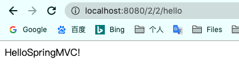
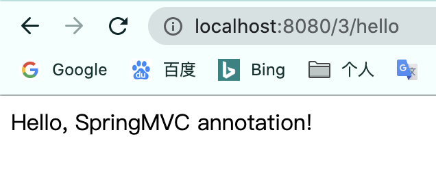

原理
首先需要了解MVC结构和servlet相关基础,SpringMVC是基于servlet的

- 实线: SpringMVC框架提供的技术,无需开发者实践
- 虚线: 需要开发者实现
- controller调用service层
- view的设置
- DispatcherServlet 前置控制器: SpringMVC的控制中心,接收用户的请求并拦截
- HandlerMapping 处理器映射: 被DispatcherServlet调用,根据请求的url查找Handler
- HandlerExecution 具体Handler, 主要作用:根据url查找控制器
- 将解析后的信息返回给控制器
- HandlerAdapter 处理器适配器,找到对应的适配类
- 调用具体的Controller执行
- 将执行结果返回
- 将结果返回控制器
- ViewResolver 调用视图解析器来解析HandlerAdapter传递的ModelAndView名(加入前缀后缀等)
- 将解析后的视图名返回控制器
- 根据视图结果,调用具体的视图
- 返回用户
依赖
1 | <!--依赖--> |
配置
方法一: 配置方式
配置web/WEB-INF下的web.xml
1
2
3
4
5
6
7
8
9
10
11
12
13
14
15
16
17
18
19
20
21
22
23
24
25
26
27
28
29
30
31
32
33
34
35
36
37
38
39
40
41
<web-app xmlns="http://xmlns.jcp.org/xml/ns/javaee"
xmlns:xsi="http://www.w3.org/2001/XMLSchema-instance"
xsi:schemaLocation="http://xmlns.jcp.org/xml/ns/javaee http://xmlns.jcp.org/xml/ns/javaee/web-app_4_0.xsd"
version="4.0">
<!--配置DispatcherServlet: 这个是SpringMVC的核心; 请求分发器,前端控制器-->
<servlet>
<servlet-name>springmvc</servlet-name>
<servlet-class>org.springframework.web.servlet.DispatcherServlet</servlet-class>
<!--DispatvcherServlet要绑定Spring的配置文件-->
<init-param>
<param-name>contextConfigLocation</param-name>
<param-value>classpath:springmvc-servlet.xml</param-value>
</init-param>
<!--启动级别:1 数字越小,启动越早-->
<load-on-startup>1</load-on-startup>
</servlet>
<!--
在SpringMVC中, / /*区别
/: 只匹配所有的请求,不会去匹配jsp
/*: 匹配所有的请求,包括jsp
-->
<servlet-mapping>
<servlet-name>springmvc</servlet-name>
<url-pattern>/</url-pattern>
</servlet-mapping>
<!--过滤器,解决乱码问题-->
<filter>
<filter-name>encoding</filter-name>
<filter-class>org.springframework.web.filter.CharacterEncodingFilter</filter-class>
<init-param>
<param-name>encoding</param-name>
<param-value>utf-8</param-value>
</init-param>
</filter>
<filter-mapping>
<filter-name>encoding</filter-name>
<url-pattern>/</url-pattern>
</filter-mapping>
</web-app>resources下新建springmvc-servlet.xml文件
1
2
3
4
5
6
7
8
9
10
11
12
13
14
15
16
17
18
19
20
21
22
<beans xmlns="http://www.springframework.org/schema/beans"
xmlns:xsi="http://www.w3.org/2001/XMLSchema-instance"
xsi:schemaLocation="http://www.springframework.org/schema/beans
https://www.springframework.org/schema/beans/spring-beans.xsd">
<!--处理器映射器-->
<bean class="org.springframework.web.servlet.handler.BeanNameUrlHandlerMapping"/>
<!--处理器适配器-->
<bean class="org.springframework.web.servlet.mvc.SimpleControllerHandlerAdapter"/>
<!--视图解析器 模板引擎 Thymeleaf Freemarker...-->
<bean class="org.springframework.web.servlet.view.InternalResourceViewResolver" id="internalResourceViewResolver">
<!--前缀后缀-->
<property name="prefix" value="/WEB-INF/jsp/"/>
<property name="suffix" value=".jsp"/>
</bean>
<!--BeanNameUrlHandlerMapping:bean-->
<!-- id是url -->
<bean id="/hello" class="zone.yiqing.controller.HelloController"/>
</beans>处理器映射器和处理器适配器框架已经提供,视图解析器可以使用框架的,也可以使用第三方
配置Controller
1
2
3
4
5
6
7
8
9
10
11
12
13
14
15
16
17
18
19
20
21
22
23
24
25
26
27
28
29
30package zone.yiqing.controller;
import org.springframework.web.servlet.ModelAndView;
import org.springframework.web.servlet.mvc.Controller;
import javax.servlet.http.HttpServletRequest;
import javax.servlet.http.HttpServletResponse;
/**
* @Author Yiqing Zhang
* @Date 2020-11-06 10:13 a.m.
* @Version 1.0
*/
public class HelloController implements Controller {
public ModelAndView handleRequest(HttpServletRequest request, HttpServletResponse response) throws Exception {
ModelAndView modelAndView = new ModelAndView();
// 业务代码
String result = "HelloSpringMVC!";
modelAndView.addObject("msg",result);
// 视图跳转
modelAndView.setViewName("test");
return modelAndView;
}
}controller调用业务层代码,这里忽略,返回一个ModelAndView,携带信息msg,视图名为test
编写视图 在 web/WEB-INF/jsp/test.jsp
1
2
3
4
5
6
7
8
9
10
11
12
13
14
15
16<%--
Created by IntelliJ IDEA.
User: Yiqing
Date: 2020-11-06
Time: 9:58 a.m.
To change this template use File | Settings | File Templates.
--%>
<%@ page contentType="text/html;charset=UTF-8" language="java" %>
<html>
<head>
<title>Title</title>
</head>
<body>
${msg}
</body>
</html>接收msg并返回
启动tomcat服务器,查看结果,2/2是我自己配置的项目路径,可以看到/hello的请求,已经正确处理

方法二: 注解方式
第一步同上
resources下新建springmvc-servlet.xml文件
- 核心的三行
1
2
3<context:component-scan base-package="zone.yiqing.controller"/>
<mvc:default-servlet-handler/>
<mvc:annotation-driven/>- 全部
1
2
3
4
5
6
7
8
9
10
11
12
13
14
15
16
17
18
19
20
21
22
23
24
25
26
27
28
29
30
31
32
33
34
35
36
37
38
39
40
41
42
43
44
45
46
47
<beans xmlns="http://www.springframework.org/schema/beans"
xmlns:xsi="http://www.w3.org/2001/XMLSchema-instance"
xmlns:context="http://www.springframework.org/schema/context"
xmlns:mvc="http://www.springframework.org/schema/mvc"
xsi:schemaLocation="http://www.springframework.org/schema/beans
https://www.springframework.org/schema/beans/spring-beans.xsd
http://www.springframework.org/schema/context
https://www.springframework.org/schema/context/spring-context.xsd
http://www.springframework.org/schema/mvc
https://www.springframework.org/schema/mvc/spring-mvc.xsd">
<!--自动扫描包,让指定包下的注解生效, 由IOC容器统一管理-->
<context:component-scan base-package="zone.yiqing.controller"/>
<!--让SpringMVC不处理静态资源-->
<mvc:default-servlet-handler/>
<!--
支持mvc注解驱动
在spring中一般使用@RequestMapping注解来完成映射关系
要想使@RequestMapping生效
必须在上下文中注册DefaultAnnotationHandlerMapping和一个AnnotationMethodHandlerAdapter实例
这两个类分别在类级别和方法级别处理
annotation-driven配置帮助我们自动完成上述两个实例的注入
-->
<mvc:annotation-driven>
<!--JSON乱码问题配置-->
<mvc:message-converters>
<bean class="org.springframework.http.converter.StringHttpMessageConverter">
<constructor-arg value="UTF-8"/>
</bean>
<bean class="org.springframework.http.converter.json.MappingJackson2HttpMessageConverter">
<property name="objectMapper">
<bean class="org.springframework.http.converter.json.Jackson2ObjectMapperFactoryBean">
<property name="failOnEmptyBeans" value="false"/>
</bean>
</property>
</bean>
</mvc:message-converters>
</mvc:annotation-driven>
<!--视图解析器 模板引擎 Thymeleaf Freemarker...-->
<bean class="org.springframework.web.servlet.view.InternalResourceViewResolver" id="internalResourceViewResolver">
<!--前缀后缀-->
<property name="prefix" value="/WEB-INF/jsp/"/>
<property name="suffix" value=".jsp"/>
</bean>
</beans>编写视图
将所有东西都放到WEB-INF目录下,可以保证视图的安全,因为这个目录下的文件客户端不能直接访问
1
2
3
4
5
6
7
8
9
10<%@ page contentType="text/html;charset=UTF-8" language="java" %>
<html>
<head>
<title>Title</title>
</head>
<body>
</body>
</html>
编写Controller
添加@Controller注解, 将会自动扫描(第二步配置),不需要再手动配置bean
@RequestMapping映射请求路径
声明Model类型的参数是为了把Action中的数据带到视图中
方法返回的结果是视图名
1
2
3
4
5
6
7
8
9
10
11
12
13
14
15
16
17
18
19
20
21package zone.yiqing.controller;
import org.springframework.stereotype.Controller;
import org.springframework.ui.Model;
import org.springframework.web.bind.annotation.RequestMapping;
/**
* @Author Yiqing Zhang
* @Date 2020-11-06 1:44 p.m.
* @Version 1.0
*/
public class HelloController {
public String hello(Model model){
// 封装数据
model.addAttribute("msg","Hello, SpringMVC annotation!");
return "hello"; // 这里return的是视图名,会被视图解析器处理找到hello.jsp
}
}
- @RequestMapping注解用于映射url到控制器类或者一个特定的处理程序方法.
- 可用于类或方法上
- 用于类上,表示类中的所有的响应请求的方法都是以该地址为父路径
同上
